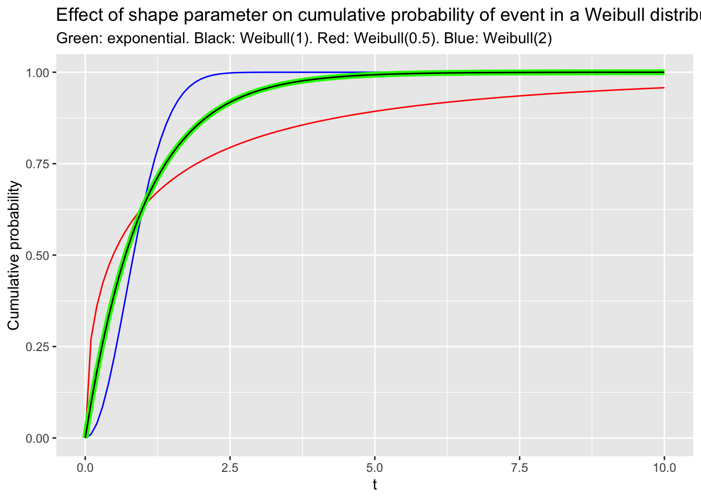
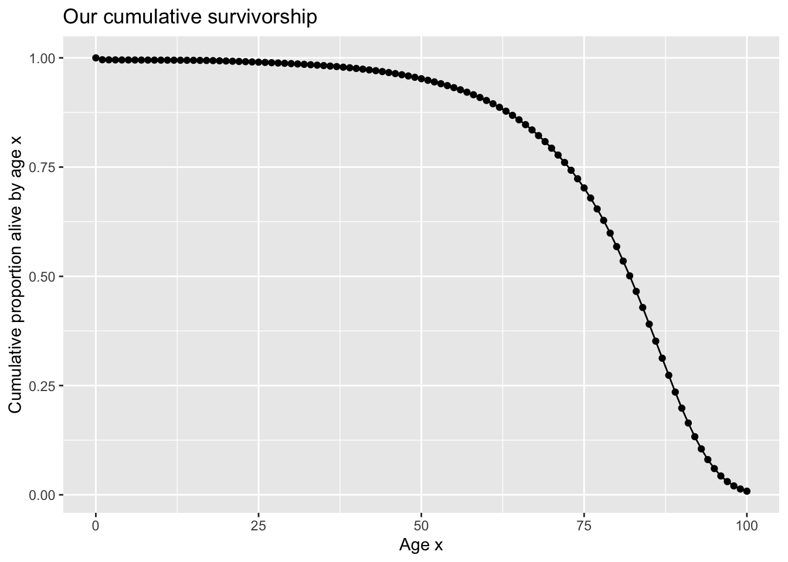
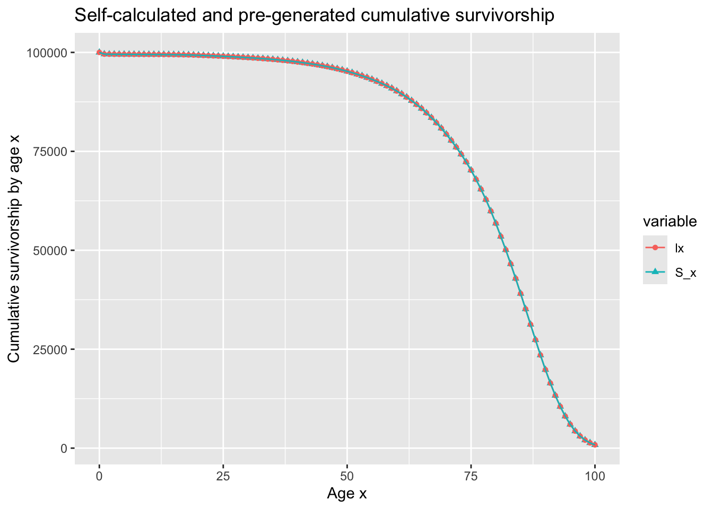
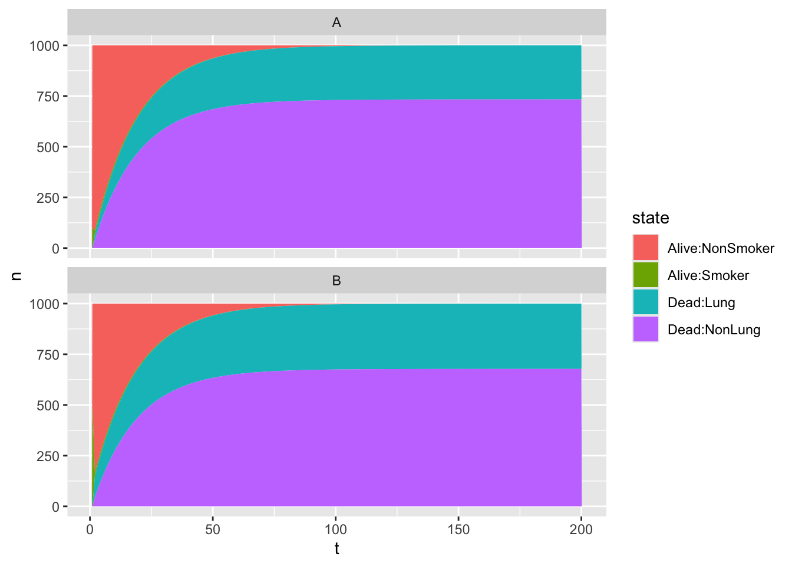
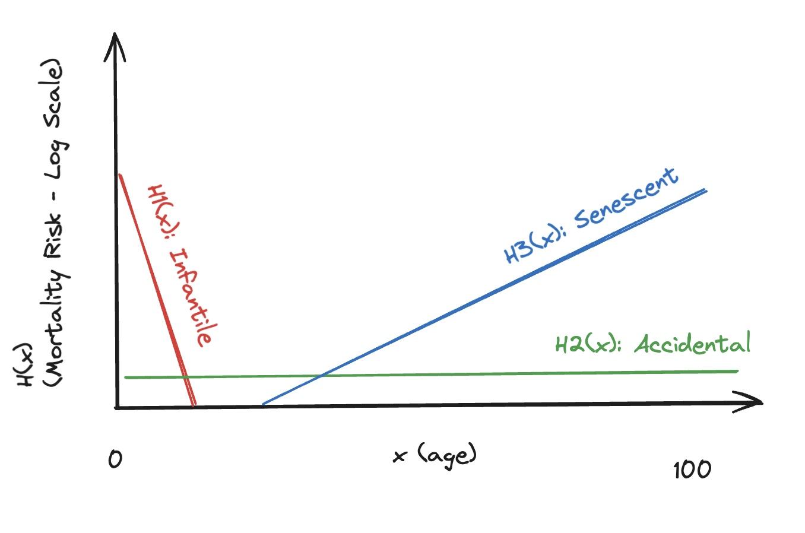

That’s the essence of a whole range of phenomena that people want answers to, and so statisticians and data scientists need to model. More specifically, we’re interested in situations where something changes from one thing to another thing, and the main factor that causes this change is time.
In this post I’m going to outline some thoughts on different scenarios we might want to model involving things changing. This is very much an exercise in writing to think, so don’t expect what I’m going to cover to be exhaustive, nor necessarily organised how it would be if I weren’t exploring and developing ideas while I write them. Nonetheless, I hope this will be useful. Let’s begin.
This and that; then and now
Let’s start with four cells, arranged in a two-by-two table.
Table 1: Four cells; two by two
Y
Not Y
X
a
b
Not X
c
d
In Table 1, we have four cells: \(M = {a, b, c, d}\) separated by a row margin \(X \in \{1, 0\}\) and a column margin \(Y \in \{1, 0 \}\) . Imagine further these cell values take natural numbers, i.e. positive integers. How does this help us?
Well, imagine now that one of the margins relates to one of two consecutive time periods \(T \in \{T_0, T_1\}\) (Say, last week, and this week), and the other margin relates to two mutually exclusive states that a person can be, such as sick or not sick. In Table 2 we now have some data arranged in a simple structure that allows us to model some data where time has an influence on state change.
Table 2: Four cells; two by two. One margin is time-based
Last Week
This Week
Sick
a
b
Not Sick
c
d
What sorts of model? Well, with aggregate cells like this, we can run something like the Fisher Exact Test or Chi-Squared Test. This will answer questions like, was last week really any different to this week in terms of probability of being or becoming sick? Implicitly, this will work towards answering the question Are the odds of becoming sick this week (\(b/d\)) really any different from the odds of becoming sick last week (\(a/c\))? They will do so by calculating an Odds Ratio (OR) (\(a/b/c/d\)), and - for the Chi-Squared Test at least - comparing it to a theoretical distribution where no one margin has an excessive ‘pull’ on the value of cells in the other margin. This can be a useful thing to do. When the cells are small, just a few events can give the impression something has changed between last week and this week in terms of sickness ratios. But maybe nothing fundamentally has changed; we’ve just had some bad/good luck?
Let’s now think about pivoting from this two-by-two cell in two different ways:
Same model; more states
One simple expansion of the above scenario is when the number of mutually exclusive states across one of the margins is more than two. For example, if the number of mutually exclusive states that an individual can be in is more than two, then we might want to expand one of the margins, as in Table 3:
Table 3: Six cells; three by two. One margin is time-based
Last Week
This Week
Very Sick
a
b
Quite Sick
c
d
Not Sick
e
f
The same tests we used before can also help on this occasion. Compared to last week, the proportion of people who become sick in any way this week ((b+d)/(b+d+f)) might not be any different to last week ((a+c)/(a+c+d)), but the proportion of those who are sick who become very sick (b / (b+d) compared with a / (a+c)) might have changed in appreciable and detectable way. For example, maybe the virus that caused the sickness has got no better or worse at infecting people, but it’s better adapted to people, so once it’s infected them it tends to make them less sick?
Once again, the same tests that work with two-by-two cells can also work with three-by-two cells. In fact they can work with an arbitrarily large number of cells; the only condition is that each margin partitioning the cells are mutually exclusive and exhaustive. So, they can work with three mutually exclusive time periods, leading to a three-by-three table shown in Table 4:
Table 4: Nine cells; three by three. One margin is time-based
Two Weeks Ago
Last Week
This Week
Very Sick
a
b
c
Quite Sick
d
e
f
Not Sick
g
h
i
In this example, the standard contingency table cells will ‘work’, though they might not be the best approaches to use anymore. There’s information we have that the modelling approach doesn’t incorporate. This is that the possible values each margin can take are ordinal: very sick is more sick than quite sick, and quite sick is more sick than not sick. Similarly, last week was more time ago than this week, and two weeks ago was more time ago than last week. So, we know that the margins are both ordinal, whereas most modelling approaches involving contingency tables (i.e. these tables to cells in margins) deal with categorical data. As Wikipedia states:
The relation between ordinal variables, or between ordinal and categorical variables, may also be represented in contingency tables, although such a practice is rare. For more on the use of a contingency table for the relation between two ordinal variables, see Goodman and Kruskal’s gamma.
Let’s now pivot things the other way.
Constant change
Let’s move back to a scenario where an observation can take only one of two mutually exclusive and exhaustive states, such such as sick or not sick. And say we’re fairly confident assuming that the probability of moving from one of these states to the other, over a fixed time period, doesn’t change over time. We can then start to think about modelling risks of something that accumulate over time.
More concrete: let’s say we think the risk of someone who’s healthy becoming sick each week is 2%, and we’re interested in understanding the proportion of a population who become ever sick over time. Although the weekly risk of becoming sick doesn’t change, the cumulative risk of becoming ever sick keeps growing.
Let’s adapt our thinking, and so our categories, slightly, to model this kind of question. Let’s start by imagining a population of people who are healthy at the start of a period of time, \(T = 0\) AKA \(T_0\). Let’s say there are 10,000 people who start off healthy at \(T_0\). With a weekly risk of becoming sick of 2%, we know by \(T = 1\) 2% of the 10,000 have become sick. They’re now no longer part of the ‘never sick’ (since the start of the observation period \(T=0\)) population, so the never sick population has declined by 2%. Now as we move to the next time period, \(T = 2\), the weekly risk of becoming sick has stayed the same, but the population size of ‘never sick’ has fallen. To work out the proportion of the initially never sick population who were never sick we now need to apply the 2% getting sick risk to the remaining never-sick population. For later time periods we have to repeat, each time a constant percentage risk applying to an ever-diminishing never-sick population ‘stock’. Let’s call \(N_0\) the initial population of never-sick persons, \(N(t)\) the number never-sick at time period \(t\), and \(p\) the proportion who become sick each time period.
\(N(0)\): \(N_0\)
\(N(1)\): \(N_0 (1 - p)\)
\(N(2)\): \(N_0 (1 - p)(1 - p)\)
\(N(3)\): \(N_0 (1 - p)(1 - p)(1 - p)\)
\(N(4)\): \(N_0 (1 - p)(1 - p)(1 - p)(1 - p)\)
etc.
Another way of presenting this is in terms of a process being applied to the last state:
\[ N(t) = N(t-1)(1 - p)\]
For \(t \ge 1\), and \(N(0) = N_0\). Here \(N(t-1)\) refers to the value at the last state, and \((1 - p)\) happens to be the process applied to the last state for each time period.
And a third way involves simply recognising that all of the five statements in the expanding block above can be represented as follows:
\[ N(t) = N_0 (1 - p)^t \]
Each of the three above representations of the process over time highlight something different: the first makes it clearer that there’s a growing (expanding) influence of history on each further time period after \(t = 0\), as the number of terms involved in calculating each future period’s terms gets larger. The second makes it clearer that, conditional on knowing the last period’s value, and the starting value, the rule for calculating future values is consistent and straight forward. And the third representation has the benefit of algebraic simplicity and neatness; on this occasion the algebra are such that, even without having the calculate all intermediate values in the series, we can calculate \(N(t)\) for any value of t.
Forgetting (Deep) History
Of the three representations shown above, the type that suggests an approach generalisable to other phenomena involving the influence of time is the second. I described this as representing ‘a process applied to the last state’, which we can represent in more general terms as something like the following:
\[N(t) = f(.)N(t-1)\]
Here \(N(t)\) represents the state of something now, \(N(t-1)\) the state of something in the recent past, and \(f(.)\) represents the process applied to the recent past, such as to generate the present state. I’ve included a dot as a placeholder in this process function to make it clear that, potentially, this process can be heterogeneous in its effects, rather than, as with the present example, always the same over time. The process could, for example, be varying with regards to population characteristics \(X\), such as when different population subgroups are at different risk of becoming sick. It could also be varying over time, \(t\), such as a risk that either grows, declines, or varies non-monotonically with regards to time. This algebraic chassis is quite flexible in terms of the specific types of phenomena it can be used to model.
The important feature of this kind of equation is that, to represent the state at any time \(t\), only the state at time \(t-1\) needs to be known. This means that, from the perspective of the equation itself, the influence of history more than one chain or iteration in the past, \(t-2\), \(t-3\) and so on, is known only through the value at time \(t-1\). In a sense, the equation has no longer term memory beyond the recent past; it takes things as they are and evolves them just one step further.
There’s a name for this kind of process: Markovian, with a process of modelled change that represents the near future only in terms of the present, or the present only in terms of the recent past, being described as having the Markov property. If the Markovian assumption can be made, then the computation of future states can proceed mainly through short, simple steps of iterative influence along a chain. The computation burden becomes relatively small, with a trade-off being that the memory burden of tracking the chains generated by this process through time become much larger. This is even more so the case when working, as statisticians need to, with stochastic processes involving uncertainty. Both inherent stochasticity in a process of evolving change, and uncertainty about the true/best value to place inside the process part of the equation \(f(.)\), mean uncertainty and variation in the process being applied. For example, instead of the proportion becoming sick each cycle being exactly 2%, it could be some proportion that is 2% on the average (i.e. its expected value is 2%), but some times is higher, and sometimes is lower. This means that on each occasion chain is built connecting \(t=0\) to \(t=T\), the period for which we want to estimate \(N(.)\), the chain will be different. Cute analytic solutions, such as the formula \(N(t) = N_0 (1 - p)^t\), won’t be readily available to help us, because, in this example, \(p\) is now a series of draws from a distribution, rather than a fixed value. Because of this variation in the process function \(f(.)\) being applied each time, the go-to approach for representing a plausible range of expected values of \(N(T)\) is to generate a large number of chains from \(t=0\) through to \(t=T\) and summarise the range of the distribution of \(N(T)\) produced, such as to show the median, mean, standard deviation, and 95% empirical intervals (the values 2.5% from the bottom and 2.5% from the top of the distribution of estimates).
What we have here, in this part of the discussion, is a reintroduction to time series modelling, as covered extensively in previous posts. The simple autoregressive model AR(1) is a clear example of a Markovian process, but so are other specifications in the ARIMA family. ARIMA models, as discussed, can be more or less ‘forgetful’: they can have terms for states two or more periods ago, rather than just the last period, and with the SARIMA extension, they can also accommodate seasonal patterns in the data too. But at heart they all start with the kind of equation at the start of this section: a process was applied to how things were in the recent past, to make things as they are now.
To transition or to absorb?
Let’s return to the example where there are three mutually exclusive states that an observation can take for each time period. And say we also believe the probability of moving to each state at time T, conditional on knowing the state at time T-1, is non-varying. Let’s call \(Y(t)\) the state at time \(t\), and \(Y(t-1)\) the state at time \(t-1\). And let’s say \(Y(.) \in \{a, b, c\}\), i.e. that all observations of Y, for all time periods, will always be one of either state a, state b, or state c.
To start to turn this into a model of state change, we need some data arranged in something like a contingency table (Table 5), where one margin shows the possible states last period, the other margin shows the possible states this period, and the cells therefore show the counts of cells that were in the last period margin, and are in the this-period margin.
Table 5: Nine cells; three by three. Cells are counts; row margins are last period; column margins are this period
a
b
c
a
\(n_{aa}\)
\(n_{ab}\)
\(n_{ac}\)
b
\(n_{ba}\)
\(n_{bb}\)
\(n_{ac}\)
c
\(n_{ca}\)
\(n_{cb}\)
\(n_{cc}\)
If we refer to the row margins by the index \(i\), and the column margins by the index \(j\), then the subscripts of the cells are of the form \(n_{ij}\). This means that \(n_{ba}\), for example, is shorthand for ‘number of observations who were in state \(b\) last period, and are in state \(a\) this period’.
Note there are fundamentally two different things that can happen over these two time periods: either the state can stay the same, or it can change. In the above, the cells \(n_{aa}\), \(n_{bb}\), and \(n_{cc}\), which are on the top-left-to-bottom-right-diagonal of the matrix, are examples where the state did not change between the two time periods, whereas all other cells, where the two subscripts are of different letters, represent transitions from one state to another.
We can go from observed counts (the \(n\)s) to transition probabilities by summing up the row margins, then dividing the cell counts by these margins. We can define these margins as follows:
\(N_{a} = n_{aa} + n_{ab} + n_{ac}\)
\(N_{b} = n_{ba} + n_{bb} + n_{bc}\)
\(N_{c} = n_{ca} + n_{cb} + n_{cc}\)
The transition probabilities for each cell indexed \(\{i, j\}\) are therefore the cell values divided by the corresponding row margin, i.e. \(p_{ij} = n_{ij} / N_i\). By definition, the sum of probabilities across any row is 1.
The result of calculating all transition probabilities in this way, while preserving them in the three-by-three square matrix presented above, is called a transition matrix. Let’s call this \(\textbf{P}\):
The transition matrix is something we can use with our process evolution equation \(N(t) = f(.)N(t-1)\) introduced earlier, substituting in for \(f(.)\). To set it running, we need to specify a starting population \(N_{0}\), which on this occasion is not a single value, but a vector of values of length equal to the dimensions of \(\textbf{P}\); in this case, three:
\[
N_0 = \{n_{1, 0}, n_{2, 0}, n_{3, 0} \}
\]
With this initial population state specified, we now have a working version of the process evolution equation that we can iteratively apply to successive outputs in order to project the population distribution out to an arbitrarily large number of iterations ahead. This relies on some matrix algebra. In the code above I’ll try to provide an example of this in R
In the above, the first column shows the projected number in state a at the time period indicated by the row, with the first row being the initial population composition, the second the projected composition at T=1, and so on. The call to rowSums() confirms that, within each time period, the total population size stays the same, even though the subpopulation in each state keeps changing.
The above process of iteratively evolving the subpopulation composition over time can be repeated an arbitrarily large number of times, which may lead to compositions converging towards a final state or equilibrium that depends much more on the transition matrix than the initial composition. In the code below I’m going to attempt to run the above for 100 cycles, rather than just five, and then plot the changing composition as an area chart.
In Figure 1 we can see that the proportion in each of the three mutually exclusive states converges to an equilibrium level fairly soon after the simulation has started, after around 10 of the 100 cycles in the model have run. It is usually the case, with Markov modelling, that in the long term the transition matrix matters more for the long-term population distribution than the initial population. As an example, here’s the same model run again, but where all of the population initially start off in state C:
Figure 2: Three state non-absorbing Markov model with different initial population distribution
Once again, the 100 cycles over which the simulation runs is more than enough for the effect of the initial population composition to ‘wash out’. (This is, by the way, similar to much Bayesian modelling relying on Markov Chains, in which an initial set of possible values for each of the parameters to be estimated has to be specified, the first ‘prior’, and there is a hope or expectation that, regardless of the initial values specified, parameter model chains will converge on the same distribution. For this reason it is common practice with Bayesian modelling to perform Bayesian modelling on multiple chains, each with different starting value sets, and check that the chains generated from each starting value have converged to the same distribution.)
Absorbing states
Let’s now adapt the initial population vector and transition matrix very slightly, to include a 4th state, \(D\). Look carefully at the code below to see how the transition matrix this time differs from the transition matrix used previously.
Figure 3: Four state Markov model with one absorbing state
For Figure 3 I’ve doubled the number of cycles, from 100 to 200. The initial population composition is exactly the same as in the example two chunks ago. But over time the proportion of the population that exists in the new state, D, keeps growing. If the number of cycles were increased further still, then by the end pretty much everyone would be in state D. Why is this?
Let’s look carefully at the 4th row in the transition matrix, corresponding to the transition probabilities of moving to each of the four states in the next cycle conditional on being in state D in the current cycle. This row is written as \(\{0, 0, 0, 1\}\), meaning the conditional probability of moving from state D to any other state is 0. This wouldn’t matter, except there’s a nonzero (albeit low) probability of moving to state D from any other state. D is a state that, each cycle, some of the population can enter. But like the Hotel California, once they’ve checked into this state they can never leave.
The technical term for a state with D’s transition matrix properties is an absorbing state; by this definition all other states can be referred to as nonabsorbing states. A more intuitive way of representing state transition relationships is through a diagram, where each state is represented as a circle or similar, and each transition probability represented as a line connecting the circles. For example, a diagram of the three state example, with no nonabsorbing states, would look something like this:
%%{
'theme': 'darkMode'
}%%
flowchart TD
A -->|pAA| A
A -->|pAB| B
A -->|pAC| C
B -->|pBA| A
B -->|pBB| B
B -->|pBC| C
C -->|pCA| A
C -->|pCB| B
C -->|pCC| C
By contrast, the four state version, with absorbing state D, would look more like the following:
%%{
'theme': 'darkMode'
}%%
flowchart TD
A -->|pAA| A
A -->|pAB| B
A -->|pAC| C
A -->|pAD| D
B -->|pBA| A
B -->|pBB| B
B -->|pBC| C
B -->|pBD| D
C -->|pCA| A
C -->|pCB| B
C -->|pCC| C
C -->|pCD| D
D -->|pDD = 1| D
Here we can see that, though there are arrows going into D, the only arrow going out of D then goes to.. D, and has a probability of 1. State D takes, but never gives back.
Survival at its simplest
A transition model can be specified with just two states - one absorbing; the other nonabsorbing - and with an initial population entirely in the nonabsorbing state. Let’s look at the following example of this:
Figure 4: Simple survival modelling using Markov models
Does this look familiar? It should, because it’s the same scenario described in the Constant Change section above. There are two states: A and B. Everyone (10,000 people) starts off in state A, each cycle there’s a 2% probability of transitioning from A to B, and B is an absorbing state. The state transition model above is just another way of representing the same phenomena, even though it’s seldom used in this way.
And what’s the canonical example of a phenomena where the above properties hold: i.e. everyone starts off in one state, there are only two states, one of which is absorbing, and each time period there’s a probability of going from the nonabsorbing to the absorbing state? Well, that would be when we label the two states as follows:
A: Alive
B: Dead
So, a two state transition model with one absorbing state is a simple case of survival modelling.
Survival modelling, contrary to inital expectations, does not have to be applied only to matters of life and death; it can be applied to any two state scenario where one state can be considered absorbing. The operative term here is can be considered. Look carefuly again at the phrasing I used in the Constant Change section above:
More concrete: let’s say we think the risk of someone who’s healthy becoming sick each week is 2%, and we’re interested in understanding the proportion of a population who become ever sick over time. Although the weekly risk of becoming sick doesn’t change, the cumulative risk of becoming ever sick keeps growing.
Although health and sickness are transient, non-absorbing states, by defining the problem in terms of an initially healthy cohort of persons who become ever sick, I reframed the scenario into one in which survival modelling is appropriate. Ever sick is an absorbing state, because the alternative to this is never sick, and once someone has become sick once they are never never sick again, even though if their health were tracked again they would likely enter and leave periods of better and worse health.
This reframing of transient events into absorbing states allows survival modelling to be applied to, of all things, events like becoming a parent. Imagine a cohort of 10,000 25 year old women, all initially childless (so not parents), and follow them for 10 years. Each year, some proportion have a child, and so become parents. Once they become a parent, they can never unbecome a parent again, even if over this decade some proportion become have one, two, three or even more children (whereas others have no children); in the binary gaze of the absorbing state a parent of three children is no more or less of a parent than a parent of one child.
So, any transient event can be modelled using survival modelling by treating defining an absorbing state as occurring when that transient event first occurs. In the case of death, this clearly makes sense, as - brief moments of heart or brain death followed by successful heroic intervention notwithstanding - death truly is an absorbing state. In the case of becoming a parent the idea of treating this like an absorbing state - an event from which there’s no turning back - also makes quite a lot of sense, with parenthood being for most people who experience something that changes their lived experiences, attitudes and behaviour in an irreversible way. For other first events, the theoretical jusitifications may be less compelling: Is voting in an election something that irreconcilibly alters someone, for example? What about first getting a full time job? First getting a driving licence? First owning a house? For each of these defining an absorbing state as the first time a transient or repeated event occurs can be done, but does it always make as much sense, conceptually, to think about phenomena with survival modelling in mind?
Thin-slicing: from probabilities to risks and hazards
The Markov model structure is a nice framework with which to approach a lot of state change phenomena, and I think may be too little used pedagogically. But it has two downsides when it comes to survival modelling proper. Firstly, by default it assumes constant transition event probabilities, whereas the probabilities of entering an absorbing state may in reality change over time. Secondly, it involves defining a fixed cycle period, such as one week or one year.
Regarding the first downside, there is a potential workaround: instead of having single transition matrix, there could be a slightly different transition matrix for each time period. For example, for an event risk that increases over time, the first transition matrix could apply an event probability of 0.001; the 100th transition matrix apply an event probability of 0.01, and each intermediate transition probability could be a linear (or log linear) interpolation between these two extreme event probabilities, such that each cycle the event probability is increased relative to the previous cycle. This would be an example of an accelerating risk model; and if the risk were successively lower in each cycle, then it would be a decelerating risk model. It could be done with Markov models, but it’s hardly ideal. Instead of having a single transition matrix, which contains \(K^2\) cells (where \(K\) is the number of states), we now have a third dimension, \(TK^2\) (where T is the number of cycles): our pithy little square of cells has become a long and inelegant cuboid.
Regarding the second downside: we know that many events don’t occur in or on a fixed schedule. If make the cycle length too large - such as per decade - than an individual may go from state A to state B to state C then back to state B within a single period, so which of the states it would be appropriate to define the individual as being in during that period is a bit arbitrary. Conversely, if the cycle length is too small - such as the millisecond or minute - then almost all cycles will be ones in which almost nothing occurs: the on-diagonal cells, pkk (where k is the state indicated by row k and column k in the transition matrix), will all be close to 1, and it will take a huge number of cycles - so a lot of computing power and memory - to simulate processes over enough of a time period to understand how things are likely to change over time. What can we do?
When it comes to survival modelling, where there are just two states and one is absorbing, we can trade off the flexibility of the transition matrix in terms of representing more than two states for analytic solutions which solve both of the above issues. In the simplest example, in which the event risks neither increase nor decrease over time, we can instead make use of an exponential model. The intuition and derivation of the exponential model comes about by recognising there’s a certain arbitrariness in the choice of time interval implicit in the constant change section above. We’ve discussed ways of expressing an outcome for one time period in terms of the value of that state in the last time period; we’ve not discussed the length of the time period itself. Let’s call our time interval \(\tau\), and let’s imagine what would happen to our model if we kept altering \(\tau\); in particular, reducing it, until it approaches 0. This kind of thought experiment, where we take finite intervals and try to think what they would look like if they became infinitesimally small, is the domain of calculus. For a finite time interval, we have a probability of something happening in a time interval bounded by \(t\) and \(t + \tau\). By contrast, as we make the time interval, the size of the time box, infinitesimally small, then we no longer speak in terms of probabilities, but instead hazards, and hazard rates. A hazard is the instantaneous analogue of a risk, a force of change occurring right now, not from time 1 to time 2. Over time, over any valid and specifiable period of time, some proportion of a stock of a susceptible population will have succumbed to this hazard. And when this hazard, that applies at all times, does not itself vary over time, then we can say (see section 7.1.2 of this guide, for example):
\[
S(t) = e^{- \lambda t}
\]
Where \(S(t)\) is known as the survival function, and defines the share of the initially susceptible population that has not succumbed to the absorbing state between the start of a period of population and the time specified by \(t\). The only parameter other than time in this equation is \(\lambda\), which is the hazard. Unlike with the fixed interval Markov-style approaches discussed so far, this equation can be used to estimate survival proportions at any specifiable time period, and does not involve iteratively rerunning the same equation multiple times to get this cumulative probability.
(Constantly) Changing hazards
The survival function equation above is a specific case of a more generalisable form, \(h(t; \alpha) = \lambda\) (where \(h(.)\) refers to ‘hazard function’). Here I’ve listed time \(t\) and additional parameters \(\alpha\) as additional inputs that the hazard function could include, even though in the exponential case it’s just a single constant \(\lambda\). One simple extension of the hazard function would be if we assume the hazard either increases or decreases over time. This can be achieved using the Weibull Distribution, which has up to three parameters - scale, shape, and location - for representing more complicated patterns of change in hazard over time. The way the Weibull distribution is represented mathematically, including whether the default distribution has two or three parameters, differs between fields of research and application. Regardless, it’s through the shape parameter that increasing or decreasing hazards can be representing, with (depending on parameterisation) values greater than 1 indicating *increasing hazards** over time, values less than one indicating decreasing hazards over time, and a value of 1 indicating constant hazard, i.e. the assumption implicit in the exponential distribution.
As an example of this, the figure below shows the cumulative probability of a Weibull distribution, where t varies from 0 to 10, where the shape parameter is either set to 1, indicating a constant hazard (black line); to 0.5, indicatign a decreasing hazard (red line); or to 2.0, indicating an increasing hazard (blue line). For reference, the exponential distribution is drawn with a green line (As this is identical to the Weibull distribution with shape = 1, the green line is drawn thicker than other lines so the black line is also visible).
Code
ggplot() +xlim(c(0, 10)) +geom_function(fun = pweibull, args =list(shape =1/2), colour ='red') +geom_function(fun = pweibull, args =list(shape =2), colour ='blue') +geom_function(fun = pexp, colour ='green', linewidth =2) +geom_function(fun = pweibull, args =list(shape =1)) +labs(x ='t',y ='Cumulative probability',title ='Effect of shape parameter on cumulative probability of event in a Weibull distribution',subtitle ='Green: exponential. Black: Weibull(1). Red: Weibull(0.5). Blue: Weibull(2) ' )

Figure 5: Examples of Weibull models with constant, accelerating and slowing hazards
Lifetables
The Weibull function allows for hazards that vary over time, but the flexibility of the function is not unlimited. They are an example of a parametric model. Lifetables, by contrast, are an example of a nonparametric model, that can show more complex patterns of variation between time and hazard; though the term ‘model’ may itself be giving the approach too much technical credit.
A lifetable is, unsurprisingly, a table, with at least two columns: one for age, \(x\); and one for probability of reaching the next age, which we’ll call \(p(x)\). Like Markov models, lifetables represent time in discrete time intervals (unlike Markov and exponential models, where time is treated continuously); these intervals are often, but not always, of a fixed distance apart from each other. They are used in demography, public health, and the actuarial sciences, and have been used for hundreds of years in one form or another.
To get familiar with lifetables, we’ll use the UK lifetables file available here. Within this, the latest lifetable available for males in the UK looks as follows:
The ‘Notation’ tab decodes the above terms as follows:
mx: the central rate of mortality
qx: the mortality rate between age x and (x + 1), that is the probability that a person aged x exactly will die before reaching age (x + 1)
lx: is the number of survivors to exact age x of 100,000 live births of the same sex who are assumed to be subject throughout their lives to [the mortality hazards presented in the lifetables ]
ex: is the average period expectation of life at exact age x, that is the average number of years that those aged x exact[ly] will life thereafter based on [the lifetables]
mx and qx are subtly different, with qx a more empirical quantity, and mx a quantity slightly more dependent on model assumptions. Both are in practice very similar, except at the earliest ages. For our illustrations we’ll focus on qx, as this is more conceptually similar to the kinds of transition probabilities being modelled by Markov models and similar. If we plot age (\(x\)) against qx (\(q(x)\)) then we get the following:
Figure 6: qx against x (age), for UK male lifetables for years 2019-2021.
This in practice looks largely like an exponentially increasing probability of mortality with age. However we can also see an elevated mortality risk in the first age. If the relationship is largely exponential then it should look more like a straight diagonal line, rather than a curve, if we use a log scale for the y axis; doing this might also reveal some other patterns in the data:
Figure 7: qx against x (age), for UK male lifetables for years 2019-2021. Log y axis
For most ages in adulthood, from around about age 35 years onwards, the relationship does indeed look like a diagonal straight line, consistent with exponentially increasing risk. (i.e. something that a Weibull model with accelerating risk should be able to represent.) However once in the mid 70s the risk appears to increase a bit faster, and at some of the oldest ages appears then to slow down a bit again. The risk in the first year of age is much higher than a straight line relationship would project; the risk in much of childhood is much lower; and the risk in early adulthood is a bit higher. In the figure below I’ve extrapolated the line drawn through ages 40 to 80 both leftwards to younger ages, and rightwards to older ages.
Figure 8: UK male lifetable qx with extrapolation from ages 40 to 80 years inclusive to earlier and later ages.
So in Figure 8 we have an empirical relationship that largely has features consistent with an assumption of simple exponential growth, but with some important differences. For some ages, and for some problems, therefore, a modelled stylisation of the relationship might be adequate; for other problems and ages it would not be.
Implicitly, lifetables alone treat age and time as synonymous for the purposes of calculating life expectancies and so on. This comes both from issues of data availability (a topic we’ll focus on later), and also from the undeniable fact that individuals age one year per year. So, for example, a 50 year old in 1980 would be a 51 year old in 1981, a 52 year old in 1983, and so on. More symbolically: if \(x\) becomes \(x + \tau\), then \(t\) must become \(t + \tau\). Given this assumption (and it can be a strong assumption), we can use \(q(x)\) (or its slightly nerdier cousin \(m(x)\)) to calculate cumulative risk of death over the lifecourse if nothing happens over time except our getting older. This is largely what the quantity \(l(x)\) shows (technically, it’s the opposite of this). Let’s try to calculate this cumulative hazard directly, and compare it with the pre-calculated quantity. (This is, incidentally, something a little bit easier to do with a spreadsheet, but easy enough to do with R too.)
Code
# Take just the two variables we needmini_lifetable <- lifetable_male_latest %>%select(x = age, qx)# Number of age periods N <-nrow(mini_lifetable)# Cumulative survivorship vectorS_x <-vector('numeric', length = N)# Everyone's alive at the start S_x[1] <-1# Apply each age's hazard to the surviving populationfor (i in2:N){ S_x[i] <- S_x[i-1] * (1- mini_lifetable$qx[i-1])}# Everyone is either alive or dead, so everyone who's not alive by a given age must be dead# Cumulative mortality vectorH_x <-1- S_xmini_lifetable <- mini_lifetable %>%mutate(S_x = S_x, H_x = H_x)mini_lifetable
mini_lifetable %>%ggplot(aes(x, S_x)) +geom_line() +geom_point() +labs(y ='Cumulative proportion alive by age x',x ='Age x',title ='Our cumulative survivorship' )

Let’s now compare this with the quantity \(l(x)\):
Code
mini_lifetable %>%left_join( lifetable_male_latest %>%select(x = age, lx) ) %>%mutate(S_x =100000* S_x) %>%select(x, S_x, lx) %>%pivot_longer(cols =c(S_x, lx), names_to ='variable',) %>%ggplot(aes(x=x, y = value, colour = variable, group = variable)) +geom_point(aes(shape = variable)) +geom_line() +labs(title ='Self-calculated and pre-generated cumulative survivorship', x ='Age x', y ='Cumulative survivorship by age x' )

We can see that these quantities are effectively identical. Additionally, they are both a type of survival function \(S(t)\), showing cumulatitve survival probability from time 0 through to time t, so long as we assume (again, a strong assumption) that x and t are effectively the same. The lifetable \(l(t)\) is therefore an example of a nonparametric survival function \(S(t)\) that operates with discrete time intervals (as with a Markov model), even though they are often used and applied by different fields to those where survival models are the bread-and-butter, leading to different terms and symbols often being used.
Absorption is Inevitable. Understanding Censoring in Survival data
Let’s circle back and join together a couple of points discussed previously:
Back in Figure 3 we first saw an example of a process being simulated forwards with one absorbing state. This was simplified further to the two state example of Figure 4, with one absorbing state. In both examples we saw that, as time marches on, the proportion of the population in the absorbing state keeps increasing. Given a long enough period of time, what proportion can we expect to be in the absorbing state? Well, clearly 100%.
In the section on lifetables, we mentioned we are making a strong assumption in assuming age and time are equivalent, i.e. that the age-specific annual mortality probabilities as recorded are those that will be experienced by real-life cohorts of people.
From the first point we can conclude that, for a two-state scenario with one absorbing state, we can describe the two possible states up to a particular time period either as:
Absorbed
Not Absorbed
Or equivalently as:
Absorbed
Not Absorbed yet.
The distinction between the first and second framing is subtle, slight, but important for understanding distinct feature of survival data structures and the models they are applied to. This feature is known as censoring, and is a reason survival modelling often looks more distinct, from many other types of model, than it really is.
Let’s think again about the lifetable example. For which birth cohort do the lifetable’s estimates of life expectancy and other conditional and cumulative survival estimates apply? Technically, the answer is no birth cohort that has ever lived, or ever will. The lifetable’s estimates are for what’s known as a synthetic cohort, even though every estimate is produced using real-world data. Additionally, the unconditional (as in starting at birth) and conditional (as in starting from other ages) life expectancies are technically known as period life expectancies. This is in contrast to cohort life expectancies, which would be life expectancies that relate to specific, real-world birth cohorts. Ideally, we would like to know these cohort life expectancies. But unfortunately by the time we do they have stopped being useful. Why?
To illustrate, let’s think about the amounts of data available to calculate age-specific mortality for three birth cohorts: the 1930 birth cohort, the 1960 birth cohort, and the 1990 birth cohort. For the 1930 birth cohort, we have observed their annual age-specific mortality probabilities for each complete year of age up to age 94 (2023 - 1930); for the 1960 birth cohort we have observed their annual age-specific mortality probabilities up to age 64; and for the 1990 birth cohort we have observed these values up to age 34. An implication of this is that we can know (rather than simply estimate) the mortality probability between ages 50 and 51 years (quantity \(q(50)\) in lifetable jargon) for the 1930 and 1960 birth cohorts, but not the 1990 birth cohort. We have \(q(20)\) for all three birth cohorts; we have \(q(80)\) for only one of the birth cohorts (the 1930 birth cohort).
The above is a sense a convoluted way of saying we cannot know the future, but also a way of thinking about how to frame it as a special kind of missing data problem, known as censoring.
Censoring and other types of missingness: A cinematic analogy
There are different classes of missing data. Imagine you’re watching a film in a cinema, and part way through someone with two-foot bouffant hair sits right in front of you, blocking your view. However - both fortunately and not - Mr or Mx Bouffant can’t keep still, so a lot of the time you can see what’s on the screen; Bouffant’s not blocking. From the time Bouffant first sits in front of you, some of images will be missing to you. Worse: Bouffant is also a talker, or maybe a loud muncher, so there’ll also be times when you can’t hear the film either; sometimes you can neither hear nor see the film. Poor you!
If the bits of the film you cannot hear, or see, the film are related in some way to the contents of the film itself, then (perhaps counterintuitively) Bouffant’s presence mean that, from your perspective, the bits of the film (sound and vision) that are missing to you are Missing at Random (MAR). For example, maybe Bouffant tends to munch a lot during establishing shots, or to sit up straight (definitely blocking your view) when there are car chases. In either case, there are bits of information you have access to (such as the visuals of the establishing shots, or the sounds of the car chases) that help you infer (more technically impute) the bits of information you’re not seeing or hearing.
Missing at Random (MAR) is the more optimistic scenario. If instead there was absolutely no relationship or link between Bouffant’s obstructions of your sights and sounds of the film, and the film itself, then this is called Missing complately at random (MCAR). In this latter scenario there’s no pattern between what you’ve observed and not observed that you can use to work out what you might have missed. (In practice there’s little we can use to determine whether this kind of missingness is determined by a MAR or a MCAR process; often it seems to be assume missingness is MAR and hope it’s not MCAR!)
The type of missingness covered by censoring, however, is different. Imagine, 70 minutes through a 110 minute film, the projector breaks down; the 40 minutes at the end of the film are censored. The missingness is all in one big lump at the end. You can guess what happens in the last third of the film, based on what happened during the first two thirds, but you can’t know.
When it comes to survival modelling, you always know what will happen: eventually, everything gets absorbed into the absorbing state. But if you don’t have all the data, you can’t know when what will eventually, inevitably, happen will happen. You can’t know whether the hazard of absorption gets more or less severe over time, or exhibits (as with mortality data) a more complex pattern.
Popping and Stopping
Let’s start with another film-adjacent example: imagine you’re making popcorn. You pour 1000 unpopped kernels into a hot pan, and close the lid. Then you wait 30 seconds.
None of the kernels have popped.
Does this mean the kernels will never pop? Of course not. You can assume that, so long as constant heat gets applied, then with more time one of the kernels will pop, then another, then another… until eventually pretty much all of the kernels will be popped.
Now let’s imagine you’re a bit more patient. You’ve now weighted exactly five minutes, and you’ve made records of exactly when you heard a pop (say using a sound recorder). Initially it was just one pop, then a few seconds later another; at a certain time you hear a cacophony of popping; then the rate of popping starts to slow down. By the time you’ve stopped recording at five minutes the previous pop had been 10 seconds ago. Only 965 of the 1000 kernels have popped by the time you stop, though you’re confident if you waited even longer all 1000 kernels would pop eventually.
If you turned the popcorn popping recording into survival modelling data, and even more magically/horrifically had tracked the time to popping of each individual kernel, your data might have something like the following structure:
Table 6: Popcorn popping hypothetical data in Survival data structure
kernel_id
time (seconds)
status
1
5
1
2
50
1
3
297
1
4
197
1
5
300
0
6
204
1
7
199
1
8
241
1
In this example, even kernel contributes exactly one observation, even though the kernels were evaluated as many different timepoints. Attached to each kernel is a time value, called time, and a binary flag, called status. Another, pithier, way this same data might be presented is:
5, 50, 297, 197, 300+, 204, 199, 241
In this pithier form the absence of a + appended to a time value indicates a status of 1, whereas the presence of a + indicates a status of 0.
In either case the time is clearly a time until… something. What is this something? Well, if status is 1, the time is the time until the absorbing event occurred - in this case the kernel popping - whereas if the status is 0 the time recorded is the time until censoring. Five minutes is 300 seconds, and so no kernels were observed longer than 300 seconds. To reiterate: the kernel that didn’t pop by 300 seconds is not immune to heat and time. It’s not unpoppable; it just hasn’t popped yet.
So, how is this kind of information useful for survival models? Well, knowing that a kernel hasn’t popped by 300 seconds is more of a testament to its survivability to popping than knowing that a kernel hasn’t popped by 30 seconds, and knowing that it hasn’t popped by 600 seconds would be more of a testament still. Although censored observations still don’t tell us when the absorbing event will happen, they do give us a lower bounds on when the event hasn’t happened by. Knowing that a kernel hasn’t popped by 300 seconds at least tells us that, when the pop does occur, it will occur after 300 seconds.
Dripfeeding kernels
In the above example, because the popping trial is stopped after 5 minutes (300 seconds), if the absorbing event hasn’t been observed yet, the censoring time will be identical for all kernels: 300 seconds. This is because in this first example we assumed all kernels entered the ‘trial’ (by fire) at exactly the same time. Now let’s think of a slightly modified scenario: imagine that, instead of all the kernels being dumped into the popcorn maker at the same time, they have to be added in more gradually, through a small funnel. If we say that t=0 is the time the machine is first turned on, then maybe the first kernel enters the machine at t=1.3, then the second at t=1.5, the third at t=1.6, and the forth at t=2.0. Let’s also imagine that, of the 1000 kernels poured slowly into the machine, the last kernel enters the machine at t=160.5 seconds. And let’s also imagine that, as in the earlier example, the trial (by fire) is stopped after exactly 5 minutes (300 seconds).
If we imagine both the first and last kernel that entered the trial are unpopped, what does this tell us? Well, for the first kernel, we know that it did not pop in 298.5 seconds. And for the last kernel, we know that it did not pop in 160.5 seconds. Our survival data structure records for these two kernels would look like 298.5+, 160.5+ in the more concise form, and in the tabular form would look as follows:
Table 7: First and last kernel unpopped data structure
kernel_id
time (seconds)
status
1
298.5
0
1000
160.5
0
Real-world relevance
This latter scenario, with the dispersed and gradual entry to the trial, is closer to the usual kinds of data generating processes for which survival modelling is likely to be used in practice. Imagine you are running a clinical trial, in which a surgical device is fitted, and you want to know the rate at which the device fails over a 10 year period. And for this trial you need 200 subjects. Of course, even if every subject could be recruited at the same time, not everyone could have the operation at the same time; it will depend on the limited availability of both the subjects, the surgical staff, and the operating rooms. So, each subject’s start date will be different, perhaps by weeks, or by months, or by years. Like the small funnel in the second popcorn maker these logistical factors mean the times subjects start their participation in the study are staggered. And as with any real life evidence like this it may often be the case that the effective censored dates are different too: a subject may move, and not give a forwarding address, so becomes last observed after two years; another subject may consent at one and five years, but withdraw their participation after seven years; in either case the subject is still able to contribute some data to the trial, even if it’s for a shorter duration than expected. Regardless of the complex variation in when subjects start and end their participation in a study, with the survival data structure - time, and status - usable information can be acquired from every subject’s participation.
It’s one thing or another: competing absorbing states
Although most applications of survival modelling are of scenarios where there is a single absorbing state, and one non-absorbing state which a population exists in intially, we saw from the contingency tables and Markov models near the start - and know from our own experience - that there can be multiple absorbing states. Now, when there are multiple absorbing states, the outcome as we move through time is no longer inevitable, though an outcome is.
As a more concrete example, in a healthy-sick-dead model, there is one absorbing state - dead - and so the final composition of the population is knowable in advance, regardless of initial population composition or individual transition state parameters. In the long run, to paraphrase Keyes, we’re all dead.
This changes if we partition dead into two or more substates that are mutually exclusive but both still absorbing. For example, consider this four state model:
non-smoker
smoker
dead - lung cancer
dead - not lung cancer
There are now two absorbing states - dead-lung cancer; and dead - not lung cancer - and two non-absorbing states: smoker and non-smoker. We likely have some strong intuitions about the relative transition probabilities linking these states. For example, we might expect both the non-smoker and smoker states to be quite ‘sticky’, meaning the probabilities of remaining in each state in each cycle is high. We might also expect the probability of entering dead-lung cancer from smoker to be higher than dead-lung cancer from non-smoker.
In this latter, two absorbing state, example we both have the same kind of structural certainty we did when there was one aborbing state, but also much more contingent uncertainty about the exact proportions ending up in each absorbing state. More concretely: we know the entire population will eventually enter an absorbing state, but we cannot know from just looking at the scenario exactly what proportion will end up in each of the absorbing state. This will depend on other factors, such as the initial population composition (like the relative proportion of smokers and non-smokers), and the transition probabilities in the transition matrix. If we want to get the final relative proportions, we’ll likely have to build and run the model.
As an example, let’s run a Markov model where the transition matrix is kept the same (see the code for the transition probabilities), and everyone starts off alive, but either (A) 10% of the population are smokers; or (B) 50% of the population are smokers. This is shown in Figure 9, with the code and comments in the code fold just before it.
Code
library(tidyverse)scenario_A_init_pop <-c(900, 100, 0, 0)scenario_B_init_pop <-c(500, 500, 0, 0)pAC <-0.01# probability of non-smoker dying of lung cancer: 1% pAD <-0.04# probability of non-smoker dying of other causes: 4% pBC <-0.20# probability of smoker dying of lung cancer: 20%pBD <-0.05# probability of smoker dying of other causes: 5%x_matrix <-matrix(data =c( (1- pAC - pAD) *0.98, (1- pAC - pAD) *0.02, pAC, pAD, # Each cycle, a non-smoker who does not die has a 2% probability of becoming a smoker (1- pBC - pBD) *0.98, (1- pBC - pBD) *0.02, pBC, pBD, # Each cycle, a smoker who does not die has a 2% probability of becoming a non-smoker0, 0, 1, 0, # First absorbing state: lung cancer death0, 0, 0, 1# Second absorbing state: other death ), nrow =4, byrow =TRUE)pop_matrix_scenario_A <-matrix(data =NA, nrow =200, ncol =4)pop_matrix_scenario_A[1,] <- scenario_A_init_poppop_matrix_scenario_B <-matrix(data =NA, nrow =200, ncol =4)pop_matrix_scenario_B[1,] <- scenario_B_init_popcolnames(pop_matrix_scenario_A) <-c("Alive:NonSmoker", "Alive:Smoker", "Dead:Lung", "Dead:NonLung")colnames(pop_matrix_scenario_B) <-c("Alive:NonSmoker", "Alive:Smoker", "Dead:Lung", "Dead:NonLung")N_periods <-nrow(pop_matrix_scenario_A)for (i in2:N_periods){ pop_matrix_scenario_A[i,] = pop_matrix_scenario_A[i-1,] %*% x_matrix pop_matrix_scenario_B[i,] = pop_matrix_scenario_B[i-1,] %*% x_matrix}pop_df_scenario_A <- pop_matrix_scenario_A %>%as_tibble(rownames ='t') %>%mutate(t =as.numeric(t)) %>%pivot_longer(-t, names_to ='state', values_to ='n')pop_df_scenario_B <- pop_matrix_scenario_B %>%as_tibble(rownames ='t') %>%mutate(t =as.numeric(t)) %>%pivot_longer(-t, names_to ='state', values_to ='n')pop_df <-bind_rows( pop_df_scenario_A %>%mutate(scenario ='A'), pop_df_scenario_B %>%mutate(scenario ='B') )n_prop_scen_A <- pop_df %>%filter(t ==200, scenario =='A', state =='Dead:Lung') %>%pull(n) n_prop_scen_B <- pop_df %>%filter(t ==200, scenario =='B', state =='Dead:Lung') %>%pull(n) pop_df %>%ggplot(aes(x = t, y = n, fill=state)) +geom_area() +facet_wrap(~ scenario, ncol =1)

Figure 9: Four state Markov model with two absorbing states. Two scenarios
In this example, in scenario A, where there are fewer smokers initially, 267 of the 1000 persons in the cohort are dead with lung cancer; in scenario B, where there were more smokers initially, 322 of the 1000 persons are dead with lung cancer.
The above example, using Markov models, of course assumes non-varying transition probabilities over time, with no evolution over time between state transitions, and no allowance for prior characteristics of the population (such as different propensities to smoke, or to die, between males and females); as with other Markov it also assumes a fixed cycle length. However, we saw with Weibull modelling that the fixed cycle length assumption can potentially be dropped, along with the fixed hazard rate assumption. And we saw with the lifetable example that transition probabilities and hazards vary in a systematic but complex way with age (as well as, implicitly, by sex). So, how can models incorporating multiple absorbing states also work with continuous time (rather than fixed time cycles), and allow for more complex evolution of hazards with population characteristics (such as age), and time?
A general purpose framework for relaxing the fixed cycles and fixed probability assumptions of Markov models, and the one-absorbing-state assumption of most survival modelling, is through extending the latter to model competing risks. And a fairly good framework for getting useful information out of such competing risks models is through discrete event simulation (DES). Rather than attempt a formal definition at this stage, let’s dive in with an example.
We saw from lifetable data (e.g. Figure 7) that there is a high mortality hazard at the earliest ages, which then declines rapidly at an exponential rate from birth; and also a more steadily increasing mortality risk, which increases exponentially with a more gradual slope, from early adulthood onwards. These form, respectively, the left side and the right side of the bathtub curve. Further, we can imagine there being a constant, background mortality risk, of deaths due to accident. We can give different names to these three components of death: infantile death, on the left side; senescent death, on the right side; and accidental death, forming the underside. This is shown graphically in the following sketch.

Figure 10: Competing schedules
We can see these three forms of mortality as competing causes: someone who dies from accidental causes has not died of infantile or senescent causes; someone who dies of infantile causes has not died of accidental or senescent causes; and someone who dies of senescent causes has not died of infantile or accidental causes. For this approach to modelling to work, we can also assume there is at least a theoretical hazard of dying of any of the three causes of death within any age range: someone between the ages of two and three years of age has some definable (if very small) risk of dying of accidental or senescent causes, as well as infantile causes; someone between the ages of 80 and 81 has some theoretical risk of dying of infantile or accidental causes as well as senescent causes.
At a first approximation, each of these three competing causes can be represented by its own Weibull model: the infantile causes schedule by a model with declining hazard; the senescent causes schedule by a model with accelerating hazard; and the accidental causes schedule by a model with a Weibull model with invariant hazard (i.e. an exponential model).
To create a DES using this model we would do the following:
For each of (say) 10,000 times:
Generate a predicted value of x from H1 (the infantile model), a predicted value of x from H2 (the accident model), and a predicted value of x from H2 (the senescent model). For iteration \(i\) in the loop let’s call this choice set \(S_i \in \{x_{i, 1}, x_{i, 2}, x_{i, 3}\}\)
Assign the time and end state of individual \(i\) to the minimum\(x\) in the choice set \(S_i\).
Produce summary statistics of the distribution of simulated times and states as appropriate.
This select-the-minimum-from-the-set rule at step (ii) should make some intuitive sense. When all states being modelled are absorbing states then the first state that the individual enters is also the last state they will end up in. Implicitly, each row i in the loop above will tell a very simple and depressing story: “Individual 1: born, then dies of infantile causes age 1.3. Individual 2: born, then dies of accidental causes age 46. Individual 3: born, then dies of senescent causes age 73.2”, and so on.
In this simplest case, where the first event after birth is the last event, each simulated individual’s ‘life story’ will be of identical length in terms of numbers of transitions, each involving a single transition. But DES can also be extended to cover two or more non-absorbing states. In such cases the select-the-next-event-from-the-choice-set rule will still apply, but for any individual the model sets may need to be re-run many times. For example, if the two non-absorbing states are alive-nonsmoker and alive-smoker, then we can assume everyone starts at age x = 0 as an alive-nonsmoker, but it’s quite possible that for some, or many, individuals their next event is to transition, at some age, to becoming an alive-smoker. Say an individual becomes an alive-smoker at age 22: they are now no longer at risk of dying of any cause of death before the age of 22. So, the models of competing absorbing and non-absorbing states need to be rerun, updated with the information that the individual being simulated is now age 22, and now a smoker, and a new choice set, from which the next step in their discrete event journey, can now be simulated. It could be that the next state is to the other non-absorbing state (alive-nonsmoker in this example), or it could be to an absorbing state. And because there are now multiple non-absorbing states the potential variation in - for want of a better term - the ‘narrative complexity’ of each simulated event journey can vary. For example, the first five simulated event journeys might look as follows:
Person 1: alive-nonsmoker age 0-18; alive-smoker age 18-52; alive-nonsmoker age 52-56; dead-accidental age 56: sequence length 4.
Person 2: alive-nonsmoker age 0-81; dead-senescent age 81: sequence length 2.
Person 3: alive-nonsmoker age 0-2; dead-infantile age 2: sequence length 2.
Person 4: alive-nonsmoker age 0-14; alive-smoker age 14-21; alive-nonsmoker age 21-28; alive-smoker age 28-30; alive-nonsmoker age 30-76; alive-smoker age 76-81; dead-senescent age 81: sequence length 7.
Person 5: alive-nonsmoker age 0-91; dead-senescent age 91: sequence length 2.
Note in the above examples what I’m calling the sequence length is not the longevity of each individual, but rather the number of events which mark transitions between discrete states. One person could live a long but (from this perspective) uneventful life, leading to a short sequence length; another person can live a shorter but more eventful life, leading to a long sequence length. The sequence length is the minimum amount of information required to record what was simulated on each occasion.
Within fields like health economics, both Markov models (more commonly) and DES (less commonly) involve associating the simulated amount of time a cohort, and individuals within the cohort, spend in different times with cost and utility ‘tarrifs’: In a healthy-sick-dead model, for example, the time spent in a healthy state might have a cost of 0 and utility of 1; the time spent in a sick state might have a cost of 1000 and a utility of 0.6; and the time spent in the dead state a cost of 0 and a utility of 0. Given different conditional transition probabilities (in Markov models) or hazard rates (DES), associated with the presence or absence of a treatment of interest or similar, such simulations can then be used to estimate the lifecourse costs and benefits (utilities) of a treatment of interest, ultimately producing estimates of the Incremental Cost Effectiveness Ratio (ICER) used to help make determinations about whether a new treatment (‘health technology)’ is likely to be judged ‘cost effective’ or not by NICE and similar institutions.
Concluding comments
This long post (in the blog) or page (in the website) has discussed a series of approaches for thinking about phenomena where ‘things change over time’, between discrete states. A subset of such phenomena include those with one absorbing and one non-absorbing state, which is the bread-and-butter of survival modelling. However the aim in this piece has been to think about a much wider family of phenomena that meets the above conditions. This has involved some phenomena and methods which are more the purview of medical statisticals; others which are more the purview of demography and the actuarial sciences; others which are more common in health economics and microsimulation; and others (such as the introductionary contingency tables) which are too simple and generic to have a single home.
The aim has been to offer breadth in this piece, and so some specific modelling approaches and the phenomena they are suited for have either not been discussed in much depth (such as how to actually implement a DES), or at all (such as proportional hazards models). These are known oversights, and there are doubtless unknown oversights, as well as possible misinterpretations too. Feedback - especially constructively critical - is very welcome in order to better see and understand this broad and complicated nexus of modelling approaches.
However, I hope the breadth of the discussion, and the attempts to show possibly underappreciated connections between different modelling approach and strategies, have been useful food for though for the reader, which rewards your patience in following along with my galaxy brain sensibilities on such matters. As a stretch goal I hope the piece has occasionally been entertaining and engaging at times too!